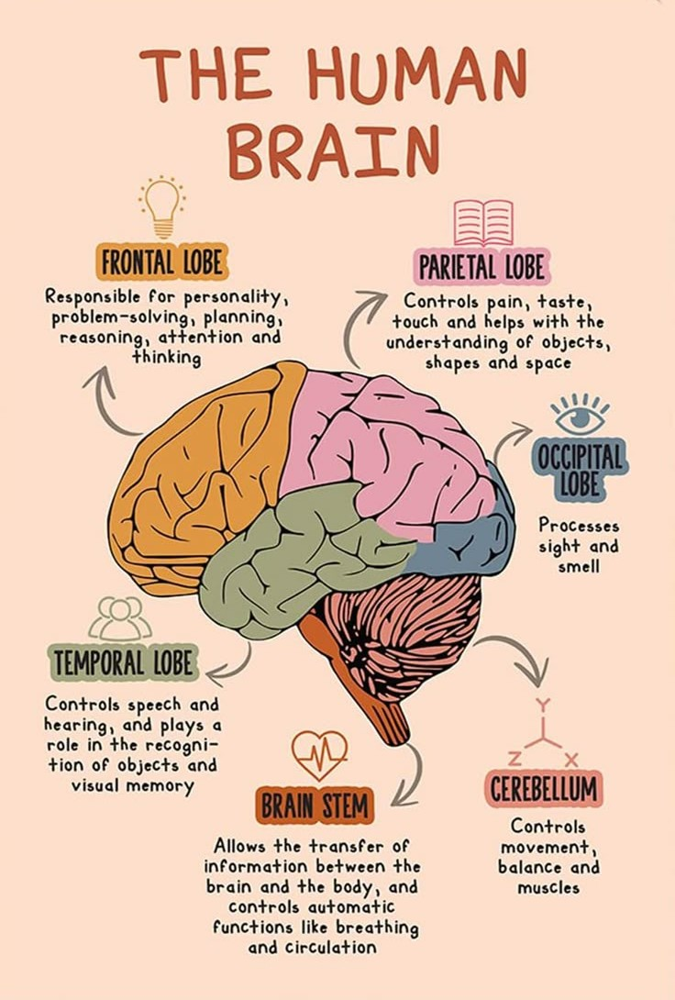

I became very inspired to study psychology while taking AP Psychology in my Junior year. I found the phenomenons and studies very interesting. I also realized I would love to be in a career where I'm helping people in the way I have also been helped by being in therapy myself.
At my current age, there is not much I can do to gain experience. I have acquired my CPR and BLS certifications in order to be able to work in a hospital as a sitter but I will only be able to do so once I turn 18. In the meantime, I'm wokring to save up money for college. My only experience in psychology has been taking AP Psychology and Sociology, classes where I had opportunities to observe people such as through natural observation where I studied people as they went about their days without them being aware of it. In Sociology, my final paper was on the fear adolscents may fear as they grow up and transition into adults. Lastly, last semester, in my ENG 101 class, my final was a paper on how music can affect people's behavior. Other than that, I also often ask my friends for feedback on how well I'm listening to them talk about things they open about to me and what I can do to better support each one of them individually. I also go to therapist of my own every other week where I learn from her and sometimes talk to her about her experiences in becoming a therapist. Below are examples of some of these projects in addition to my favorite assignment from AP Psychology.